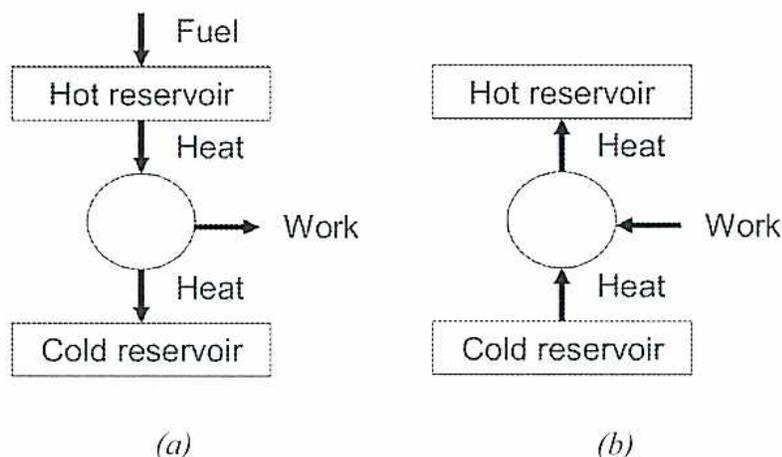
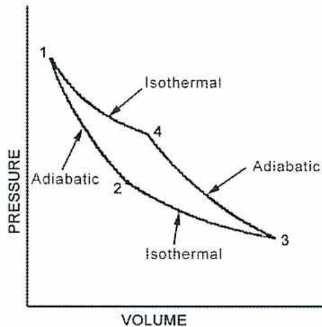
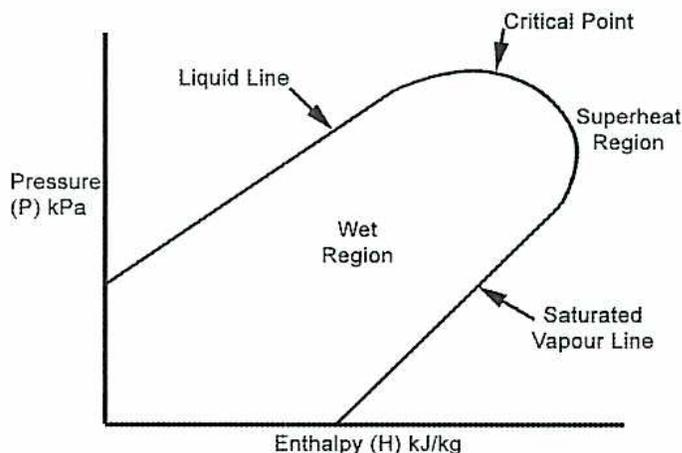
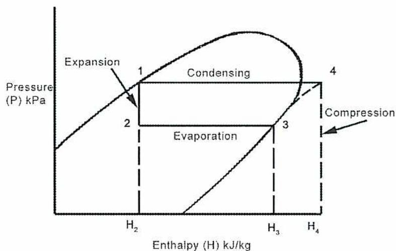

When you complete this learning material, you will be able to:
Perform refrigeration system calculations.
You will specifically be able to complete the following tasks:
Describe the general refrigeration cycle and the application of the Carnot cycle.
The thermodynamics of refrigeration is similar to that of engines, except that the refrigeration cycle is the opposite of the heat engine cycle. The heat engine, Fig. 1(a), takes heat from a hot reservoir (usually provided by fuel combustion) and extracts work; then, the remaining heat is transferred to a cold reservoir. In the refrigeration and heat pump cycle, Fig. 1(b), heat is removed from a reservoir (the substance to be cooled), work is done on the refrigerant, and then the heat is expelled to a hot reservoir.

The diagram consists of two parts, (a) and (b), illustrating thermodynamic cycles. Part (a) shows a heat engine: a 'Fuel' input points to a 'Hot reservoir' box. An arrow labeled 'Heat' points from the 'Hot reservoir' to a central circle. An arrow labeled 'Work' points from the central circle to the right. An arrow labeled 'Heat' points from the central circle to a 'Cold reservoir' box at the bottom. Part (b) shows a refrigeration cycle: an arrow labeled 'Heat' points from a 'Cold reservoir' box at the bottom to a central circle. An arrow labeled 'Work' points from the right to the central circle. An arrow labeled 'Heat' points from the central circle to a 'Hot reservoir' box at the top.
Figure 1
Comparison of Heat Engine and General Refrigeration Cycle
Remember that the terms hot and cold are relative. In a heat engine, the hot reservoir operates at the combustion temperature. In refrigeration, the cold reservoir operates at the boiling temperature of the refrigerant, which happens to be very low, and the hot reservoir operates at relatively cool temperatures.
Vapour compression systems derive their cooling effect from the evaporation of a liquid refrigerant. The process of evaporation (or vaporization or boiling) supplies latent heat to the liquid being vaporized. In the case of the refrigeration cycle, this heat is drawn from the area to be cooled.
In order to continuously operate the cooling cycle with a limited supply of refrigerant, the operating cycle must return the refrigerant to its liquid state by cooling it in a condenser. At this time, the latent heat in the refrigerant is absorbed by a cooling medium (usually cooling water) and then rejected to waste.
This process of successive evaporation and condensation depends upon a pressure difference between the condenser and the evaporator. The condenser must operate at a higher pressure than the evaporator. That is, the refrigerant must be compressed after leaving the evaporator and before entering the condenser. Further, the compression pressure must be such that the saturation temperature of the refrigerant in the condenser is above the temperature of the cooling water.
Various methods are used to compress the refrigerant: reciprocating, rotary or centrifugal devices, high-pressure steam ejectors (steam-jet system), or evaporation from a secondary fluid (absorption system). Whichever method is used, the system remains basically a vapour-compression system.
The term compression, usually reserved for systems using reciprocating or rotary compressors, is not generally used to describe centrifugal, steam-jet, or absorption systems.
The Carnot cycle describes the ideal thermodynamic cycle for all heat engines. The Carnot cycle is normally applied to heat engines as a measure of maximum efficiency. Although it is not achievable from a practical point of view, the Carnot cycle is useful as a comparison to more realistic cycles.
Briefly stated, it consists of four processes that repeat cyclically:
Cycle efficiency is calculated as follows:
$$ \text{Heat engine efficiency} = \frac{\text{Work done}}{\text{Heat supplied}} $$
$$ \text{Heat engine efficiency} = \frac{T_1 - T_2}{T_1} $$
Where:
\( T_1 \) = absolute temperature of heat supply
\( T_2 \) = absolute temperature of heat rejection
This is the maximum efficiency obtainable by any cycle operating between these temperature limits, \( T_1 - T_2 \) .
In a heat engine cycle, heat is transformed into mechanical work; in a refrigeration cycle, the opposite takes place. Mechanical work is supplied and heat is transferred from one location to another. This reversal of the sequence of events in a heat-engine cycle leads the refrigeration cycle to be compared to a Carnot cycle in reverse.
Fig. 2 shows a reversed Carnot cycle taking place upon a perfect (non-condensable) gas.

Figure 2
Reversed Carnot Cycle
The four processes in the reversed Carnot cycle are:
The vapour compression system of refrigeration uses refrigerants that repeatedly change phase from liquid to vapour and back again.
Fig. 3 shows a reversed two-phase Carnot cycle, which is applicable to the refrigeration cycle.
![A Pressure-Volume (P-V) diagram of a Two-Phase Carnot Cycle. The vertical axis is labeled 'PRESSURE' and the horizontal axis is labeled 'VOLUME'. The cycle is represented by a closed loop with four states: 1, 2, 3, and 4. State 1 is at the top left of the loop, state 2 is at the bottom left, state 3 is at the bottom right, and state 4 is at the top right. The process from 1 to 2 is a steep downward curve. The process from 2 to 3 is a horizontal line. The process from 3 to 4 is a steep upward curve. The process from 4 to 1 is a horizontal line. The entire cycle is enclosed within a larger, smooth, bell-shaped curve that represents the saturation dome.](431b8889a0e7f676f0eef40859590349_img.jpg)
Figure 3
Two-Phase Carnot Cycle
Applied to a refrigerating plant, the stages represent the following:
Of these four operations, the only one a practical refrigeration plant does not approach is Stage 1-2. Expansion of the refrigerant through the expansion valve takes place as a throttling operation, that is, at constant enthalpy (or heat content) and not as an adiabatic operation.
Thus, the Carnot cycle (when operating in either direction) may be used as a standard of comparison for:
The efficiencies and performance coefficients stated above give the maximum theoretical figures for any machine working between the same temperature limits.
The Carnot cycle applied to heat engines uses the cycle efficiency formula:
$$ \text{Heat engine efficiency} = \frac{\text{Work done}}{\text{Heat supplied}} $$
$$ \text{Heat engine efficiency} = \frac{T_1 - T_2}{T_1} $$
Similar calculations applied to the reversed Carnot cycle show that refrigeration efficiency depends upon the ratio
$$ \frac{\text{Heat absorbed}}{\text{Heat equivalent of work done}} $$
To avoid confusion, the term “refrigeration efficiency” is replaced by coefficient of performance (COP). Heat engine efficiency measures the effectiveness of the conversion of heat energy into mechanical energy. However, the refrigeration process achieves only a removal of heat from one location to another. There is no energy conversion involved and no thermal efficiency can be applied.
Thus:
$$ \text{Refrigeration Coefficient of Performance} = \frac{\text{Heat absorbed}}{\text{Heat equivalent of work done}} $$ $$ COP_{ref} = \frac{T_2}{T_1 - T_2} $$
Where:
\( T_1 \) = absolute temperature of heat supply (condenser)
\( T_2 \) = absolute temperature of heat rejection (evaporator)
Since we want to expend the least amount of work for a certain amount of refrigeration, the value of COP should be as high as possible.
A refrigerating machine is designed to remove heat from some location in order to cool it. The disposal of this heat, once it has been removed, is of no consequence to the operation. Usually, it is passed to cooling water in the condenser and then rejected to waste.
A heat pump operates on the same cycle as a refrigerating machine except that the effectiveness of the operation is gauged by the heat rejected .
The coefficient of performance of a heat pump then becomes:
$$ \text{Heat Pump Coefficient of Performance} = \frac{\text{Heat rejected}}{\text{Heat equivalent of work done}} $$ $$ COP_{(\text{heat pump})} = \frac{T_1}{T_1 - T_2} $$
A machine operates on the Carnot cycle between the temperature limits of \( 30^\circ\text{C} \) and \( -15^\circ\text{C} \) . Determine the performance rating when it is operated as a
$$ T_1 = 30^\circ\text{C} + 273 $$
$$ T_1 = 303 \text{ K} $$
$$ T_2 = -15^\circ\text{C} + 273 $$
$$ T_2 = 258 \text{ K} $$
(a) Heat engine, using equation, Efficiency \( = \frac{T_1 - T_2}{T_1} \)
$$ \text{Efficiency} = \frac{T_1 - T_2}{T_1} $$
$$ \text{Efficiency} = \frac{303 - 258}{303} $$
$$ \text{Efficiency} = \frac{45}{303} $$
$$ \text{Efficiency} = 0.148 \text{ (Ans.)} $$
(b) Refrigerating machine, using equation: Coefficient of Performance \( = \frac{T_2}{T_1 - T_2} \)
$$ \text{Coefficient of Performance} = \frac{T_2}{T_1 - T_2} $$
$$ \text{Coefficient of Performance} = \frac{258}{303 - 258} $$
$$ \text{Coefficient of Performance} = \frac{258}{45} $$
$$ \text{Coefficient of Performance} = \mathbf{5.73} \text{ (Ans.)} $$
(c) Heat pump, using equation: \( \text{Coefficient of Performance} = \frac{T_1}{T_1 - T_2} \)
$$ \text{Coefficient of Performance} = \frac{T_1}{T_1 - T_2} $$
$$ \text{Coefficient of Performance} = \frac{303}{303 - 258} $$
$$ \text{Coefficient of Performance} = \frac{303}{45} $$
$$ \text{Coefficient of Performance} = \mathbf{6.73} \text{ (Ans.)} $$
Describe the relationship between enthalpy and pressure for a refrigeration cycle.
For the purpose of calculating and measuring the effectiveness of a practical vapour-compression refrigeration cycle, the stages are drawn on a pressure-enthalpy diagram (instead of the pressure-volume diagrams shown in Figs. 2 and 3). Pressures are easily measured in a refrigeration system, and enthalpy is a key variable in analyzing cycle performance.
The refrigeration cycle diagram is imposed on the pressure-enthalpy chart for the refrigerant in use. Calculations can then be carried out as follows. The diagram is divided into major areas by the liquid and saturated vapour lines that meet at the critical point above which no liquid can exist. These lines enclose the wet region where both liquid and vapour can be present. Beyond the saturated vapour line, the refrigerant is in superheated state. Fig. 4 shows the phase changes.

Figure 4
Phase Changes
The general refrigeration cycle can be represented on the pressure-enthalpy diagram shown in Fig. 5.
![Figure 5: General Refrigeration Pressure-Enthalpy Diagram. The vertical axis is Pressure (P) kPa and the horizontal axis is Enthalpy (H) kJ/kg. The diagram shows a saturation dome with a liquid region on the left and a superheat region on the right. A cycle is plotted with four points: 1 (saturated vapor), 2 (subcooled liquid), 3 (saturated liquid), and 4 (superheated vapor). The cycle proceeds from 1 to 2 (vertical line down), 2 to 3 (horizontal line right), 3 to 4 (diagonal line up-right), and 4 to 1 (horizontal line left).](36ac3e730a00d3f42d3400f5709f641a_img.jpg)
Figure 5
General Refrigeration Pressure-Enthalpy Diagram
The stages on this diagram represent the following operations:
As stated earlier, the one stage in the reversed Carnot cycle which a practical vapour-compression refrigerating machine cannot approach is Stage 1-2, adiabatic expansion.
The Rankine form of the cycle shown in Fig. 4 replaces adiabatic expansion with an expansion at constant enthalpy. This is typical of a throttling operation and represents the process the refrigerant passes through as it flows through the expansion valve.
A pressure-enthalpy chart can be constructed for any refrigerant and is typical of that refrigerant. Fig. 6 shows a pressure-enthalpy chart followed by a basic schematic of a refrigeration system in Fig. 7.

Figure 6
Pressure-Enthalpy Chart
![Figure 7: Basic Schematic of a Refrigeration System. The diagram shows a closed loop with four components: Evaporator, Throttle (expansion) Valve, Condenser, and Pump-Compressor. State 1 is at the exit of the throttle valve, state 2 is at the exit of the pump-compressor, state 3 is at the exit of the condenser, and state 4 is at the exit of the evaporator. Heat in from Region to be Cooled enters the evaporator, and Heat Rejected to Cooling Water leaves the condenser. Work is input to the pump-compressor.](eefe19c5e14dc4d6c316b7f7fbb7d7d7_img.jpg)
Figure 7
Basic Schematic of a Refrigeration System
The heat absorbed by the refrigerant passing through the evaporator is given by the difference of:
$$ H_3 - H_2 \text{ kJ/kg} $$
The heat rejected to the condenser cooling water is given by the difference of:
$$ H_4 - H_1 $$
Note: These two operations, evaporation and condensing, take place at constant pressure during the phase change from liquid to vapour (or vice versa). The temperature remains constant at the saturation temperature for that pressure.
During throttling through the regulating valve:
$$ H_1 = H_2 $$
During compression, ideal conditions (reversible adiabatic) are obtained when there is no change in entropy. That is, when Stage 3-4 (compression) takes place along a line drawn parallel to the lines of constant entropy on the diagram in Fig. 5.
Entropy will not be discussed at this time except as a means of defining ideal adiabatic compression and simplifying the calculations carried out on refrigeration cycles.
For this purpose, entropy can be thought of as a mathematical relationship between heat and absolute temperature. It is the property of a fluid that remains constant during reversible adiabatic operations.
If there are no heat losses to atmosphere during the cycle, a heat balance is struck for each unit quantity of refrigerant as it passes through one complete cycle of operations.
Heat rejected to condenser = Heat absorbed in evaporator + Equivalent of work done (WD) kJ
$$ (H_4 - H_1) = (H_3 - H_2) + WD $$
$$ WD = (H_4 - H_1) - (H_3 - H_2) $$
$$ \text{But } H_1 = H_2 $$
$$ \text{Therefore } WD = (H_4 - H_3) \text{ kJ} $$
$$ \text{Work done} = (H_4 - H_3) \text{ kJ} $$
Note: These values can be read from a pressure-enthalpy diagram for the cycle or calculated using a table of properties of refrigerants. These are provided at the end of the module in Figs. 9-11.
Define and calculate the refrigerating effect and the mass of refrigerant circulated.
The artificial production of low temperatures may involve one or more of several standard cycles or processes. Each method is aimed at the abstraction of heat from a desired area or material, and it is obvious that some means of equating the refrigerating effects obtained from different machines must be made standard.
The unit used to rate refrigerating machines, and other parts of a refrigerating system, is the tonne of refrigeration . It is defined as the removal of heat at a sufficient rate to produce 1 t of ice in 24 hours from water at 0°C.
Note: There is no change in temperature involved.
(In the following calculation, take latent heat of fusion as 335 kJ/kg.).
On this basis, the heat to be removed to produce:
$$ 1 \text{ t of ice} = 1000 \times 335 \text{ kJ/kg} $$
$$ 1 \text{ t of ice} = 335 \, 000 \text{ kJ} $$
If this is carried out in 24 hrs:
$$ \text{Rate of heat removal/hr} = \frac{335 \, 000}{24} $$
$$ \text{Rate of heat removal/hr} = 13 \, 958 \text{ kJ/h} $$
$$ \text{Rate of heat removal/min} = \frac{13 \, 958 \text{ kJ/h}}{60 \text{ min}} $$
$$ \text{Rate of heat removal/min} = 233 \text{ kJ/min} $$
Therefore:
$$ 1 \text{ t of refrigeration} = 13 \, 958 \text{ kJ/h} $$
$$ \text{or} = 233 \text{ kJ/min} $$
If the ratings in tonnes of refrigeration of two or more machines are to be tested and compared, the tests must be carried out under comparable conditions. Standard test conditions are set at -15°C temperature in the evaporator and 30°C in the condenser.
The refrigerating effect achieved during a cycle is the amount of heat absorbed by the refrigerant as it passes through the evaporator. Referring to Fig. 6, this is the increase in enthalpy from point 2 to point 3.
Thus:
$$ \text{Refrigerating effect} = H_3 - H_2 \text{ kJ/kg} $$
The unit quantity of refrigerant used is 1 kg; thus, the above figures are the specific heat in kJ/kg of refrigerant circulated.
The rate of circulation of refrigerant in kg/min required for a rating of 1 t of refrigeration can be calculated from the relationship between the heat absorption rate per tonne (233 kJ/min) and the refrigerating effect in kg of refrigerant.
Thus:
$$ \text{Refrigerant circulated kg/min/t} = \frac{233 \text{ kJ/min}}{H_3 - H_2} $$
A refrigerating machine works between the temperature limits of 20°C and -11°C and is driven by a motor of 1.5 kW. How much ice at -2°C could this machine make per hour from water at 15°C?
Since we have no information about the actual efficiencies of the components, we will use the ideal (Carnot) coefficient of performance to find the amount of cooling that can be done given the upper and lower temperatures and the amount of work done by the compressor.
$$ T_1 = 20^\circ\text{C} + 273 $$
$$ T_1 = 293 \text{ K} $$
$$ T_2 = -11^\circ\text{C} + 273 $$
$$ T_2 = 262 \text{ K} $$
Using equation \( \text{COP}_{\text{ref}} = \frac{T_2}{T_1 - T_2} \) , the coefficient of performance is:
$$ \text{COP}_{\text{ref}} = \frac{T_2}{T_1 - T_2} $$
$$ \text{COP}_{\text{ref}} = \frac{262}{293 - 262} $$
$$ \text{COP}_{\text{ref}} = \frac{262}{31} $$
$$ \text{COP}_{\text{ref}} = 8.45 $$
Since work and heat are equivalent:
1 kWh has a heat equivalent of 3600 kJ (1 W = 1J/s).
Thus, the heat equivalent of the motor if it operates for one hour:
$$ 1.5 \text{ kWh} = 1.5 \times 3600 \text{ kJ} $$
$$ 1.5 \text{ kWh} = 5400 \text{ kJ} $$
Since:
$$ \text{COP}_{\text{ref}} = \frac{\text{Heat extracted}}{\text{Work done}} $$
The ideal heat extracted by the evaporator will be
$$ \text{COP}_{\text{ref}} = \frac{\text{Heat extracted}}{\text{Work done}} $$
$$ \text{Heat extracted} = \text{COP}_{\text{ref}} \times \text{Work done} $$
$$ \text{Heat extracted} = 8.45 \times 5400 \text{ kJ} $$
$$ \text{Heat extracted} = 45\,630 \text{ kJ} $$
The amount of heat that has to be taken from 1 kg of water at 15°C to convert it to ice at -2°C is found from the coefficients of heat transfer for water and ice and the latent heat. Take specific heats of water as 4.183 kJ/kg and ice, 2.135 kJ/kg. The latent heat of fusion is 335 kJ/kg.
$$ \text{Heat/kg ice} = \text{Sensible heat of water} + \text{Latent heat of fusion} + \text{Sensible heat of ice} $$
$$ \text{Heat/kg ice} = (15 \times 4.183) + 335 + 2.135 [0 - (-2)] $$
$$ \text{Heat/kg ice} = 62.75 + 335 + 2.135 [0 + 2] $$
$$ \text{Heat/kg ice} = 62.75 + 335 + 2.135 [2] $$
$$ \text{Heat/kg ice} = 62.75 + 335 + 4.27 $$
$$ \text{Heat/kg ice} = 402.02 \text{ kJ} $$
$$ \text{Ice made/h} = \frac{\text{Coefficient of performance} \times \text{Work done}}{\text{Heat extracted}} $$
$$ \text{Ice made/h} = \frac{8.45 \times 5400}{402.02} $$
$$ \text{Ice made/h} = \frac{45630}{402.02} $$
$$ \text{Ice made/h} = \mathbf{113.50 \text{ kg (Ans.)}} $$
Calculate the coefficient of performance for a refrigeration system.
The coefficient of performance for a reversed Carnot cycle refrigerating machine is given
$$ \text{in the equation: } COP_{ref} = \frac{T_2}{T_1 - T_2} $$
This gives the maximum performance for any machine operating between these temperature limits, \( T_1 - T_2 \) .
A coefficient applicable to all refrigerating machines can be calculated as follows:
$$ \text{Coefficient of Performance} = \frac{\text{Heat absorbed in evaporator}}{\text{Heat equivalent of compression work}} $$
Using the notation for enthalpy shown in Fig. 6, the COP can be calculated as
$$ COP = \frac{H_3 - H_2}{H_4 - H_3} $$
An ammonia vapour compression refrigerating plant operates between a cold region at \( -12^\circ\text{C} \) and a hot region at \( 26^\circ\text{C} \) . Saturated vapour enters the compressor and saturated liquid enters the expansion valve. The plant operates at the rate of 10 t of refrigeration (2330 kJ/min).
Neglecting all losses, find:
Using the table Properties of Refrigerants (Ammonia) given in Fig. 9:
Absolute pressure at \( -12^{\circ}\text{C} = 268 \text{ kPa} \)
Absolute pressure at \( 26^{\circ}\text{C} = 1034 \text{ kPa} \)
Temperatures and pressures for ammonia are related to each other in the same fashion as steam saturation temperatures are linked to particular pressures. The refrigerant (ammonia) will change phase, from liquid to vapour, in the evaporator (the cold region) at a pressure of 268 kPa and a temperature of \( -12^{\circ}\text{C} \) .
Minimum pressure = 268 kPa and maximum pressure = 1034 kPa (Ans.)
b) Refrigerant flow rate (kJ/min)
The heat absorbed per kg of refrigerant as it passes through the evaporator (the refrigerating effect) is given by the difference in enthalpy content between point 2 (at entry to the evaporator) and point 3 (at entry to the compressor).
Note: as shown in Objective 2
$$ H_2 = H_1 $$
The expansion operation, point 1 to point 2, takes place at constant enthalpy, and points 1 and 2 are in the same vertical line on the diagram. Point 1 represents saturated liquid ( \( h_f \) ) at a temperature of \( 26^{\circ}\text{C} \) ; thus, \( H_1 \) can be read from the refrigerant table for ammonia shown in Fig. 9.
At \( 26^{\circ}\text{C} \) :
Enthalpy saturated liquid \( h_f = 303.7 \text{ kJ/kg} \)
\( H_3 \) represents saturated vapour at \( -12^{\circ}\text{C} \) . That is, ammonia which has been fully evaporated at \( -12^{\circ}\text{C} \) (268 kPa) and is in a dry and saturated condition, but not superheated.
From the table in Fig. 9, using equation: Refrigerating effect = \( H_3 - H_2 \text{ kJ/kg} \)
Enthalpy of vapour ( \( h_g \) ) at \( -12^{\circ}\text{C} \) (or \( H_3 \) ) = \( 1430.5 \text{ kJ/kg} \)
$$ H_3 - H_2 \text{ (or } H_3 - H_1) = 1430.5 \text{ kJ/kg} - 303.7 \text{ kJ/kg} $$
$$ H_3 - H_2 \text{ (or } H_3 - H_1) = 1126.8 \text{ kJ/kg} $$
The refrigerating effect of 1 kg of refrigerant circulated is \( 1126.8 \text{ kJ/kg} \) , but a refrigeration rate of 10 t, or 2330 kJ/min, is required.
Thus, the refrigerant flow rate needed is:
$$ \text{Flow rate} = \frac{\text{Plant operating rate}}{\text{Refrigerating effect of refrigerant/kg}} $$
$$ \text{Flow rate} = \frac{2330 \text{ kJ/min}}{1126.8 \text{ kJ/kg}} $$
$$ \text{Flow rate} = \mathbf{2.07 \text{ kg/min}} \text{ (Ans.)} $$
c) Volume flow rate entering the compressor ( \( \text{m}^3/\text{min} \) )
At the compressor inlet, the ammonia is saturated vapour at \( -12^\circ\text{C} \) and 268 kPa. Its specific volume under these conditions can be found from the refrigerant tables in Fig. 9:
$$ \text{Specific volume } (v_g) = 0.4521 \text{ m}^3/\text{kg} $$
Therefore, the volume flow rate entering the compressor is:
$$ \text{Volume flow rate} = \text{Specific volume} \times \text{Flow rate} $$
$$ \text{Volume flow rate} = 0.4521 \text{ m}^3/\text{kg} \times 2.07 \text{ kg/min} $$
$$ \text{Volume flow rate} = \mathbf{0.936 \text{ m}^3/\text{min}} \text{ (Ans.)} $$
d) Coefficient of Performance
The coefficient of performance for a refrigerating machine is given by the ratio of heat transferred to work expended.
$$ \text{COP} = \frac{\text{Refrigerating effect}}{\text{Work done in compressor}} $$
$$ \text{COP} = \frac{H_3 - H_2}{H_4 - H_3} $$
From part (b) above
$$ H_3 - H_2 = 1126.8 \text{ kJ/kg} $$
$$ \text{and } H_3 = 1430.5 \text{ kJ/kg} $$
\( H_4 \) is the enthalpy per kg of the refrigerant as it leaves the compressor. \( H_4 \) can be found from the pressure-enthalpy diagram (Fig. 11) by locating point 3 (saturated vapour at 268 kPa) and following the line of constant entropy to the condenser pressure of 1034 kPa abs.
Therefore:
At point 3, entropy = 5.504 (from Fig. 11)
At point 4, enthalpy = 1626 kJ/kg
The heat equivalent of compressor work input, using equation \( WD = H_4 - H_3 \) , is:
$$ WD = H_4 - H_3 $$
$$ WD = 1626.0 \text{ kJ/kg} - 1430.5 \text{ kJ/kg} $$
$$ WD = 195.5 \text{ kJ/kg} $$
The COP is, using equation \( COP = \frac{H_3 - H_2}{H_4 - H_3} \) :
$$ COP = \frac{H_3 - H_2}{H_4 - H_3} $$
$$ COP = \frac{1126.8 \text{ kJ/kg}}{195.5 \text{ kJ/kg}} $$
$$ COP = 5.76 \text{ (Ans.)} $$
Calculate the capacity of a refrigeration machine.
The capacity of a refrigeration machine is normally stated in terms of a tonne of refrigeration which is defined as the removal of heat at a sufficient rate to produce 1 tonne (1000 kg) of ice in 24 hours from water at 0°C.
Capacity can be calculated if the required thermodynamic variables are available.
If the refrigerant in Example 3 (Objective 4) is changed from ammonia to Freon 12, but the compressor piston displacement, volumetric efficiency, etc. remain the same, and the evaporator and condenser temperatures are unchanged, what is the new capacity in tonnes?
If the compressor runs at the same speed and has the same displacement and volumetric efficiency, it will draw in the same volume of vapour per minute. That is, 0.936 m 3 /min of Freon 12 is drawn into the compressor. If the evaporator temperature remains at -12°C, then the specific volume and the refrigerating effect can be calculated as follows.
From the refrigerant table in Fig. 10, by interpolation, Freon 12 as saturated vapour:
$$ \text{Sp.Vol. at } -12^\circ\text{C} = \text{Sp.Vol. at } -10^\circ\text{C} + \frac{-2}{-5} (\text{Sp.Vol. at } -15^\circ\text{C} - \text{Sp.Vol. at } -10^\circ\text{C}) $$
$$ \text{Sp.Vol. at } -12^\circ\text{C} = 0.0766 \text{ m}^3/\text{kg} + \frac{-2}{-5} (0.0910 \text{ m}^3/\text{kg} - 0.0766 \text{ m}^3/\text{kg}) $$
$$ \text{Sp.Vol. at } -12^\circ\text{C} = 0.0766 \text{ m}^3/\text{kg} + 0.4 (0.0144 \text{ m}^3/\text{kg}) $$
$$ \text{Sp.Vol. at } -12^\circ\text{C} = 0.0766 \text{ m}^3/\text{kg} + 0.0058 \text{ m}^3/\text{kg} $$
$$ \text{Sp.Vol. at } -12^\circ\text{C} = 0.0824 \text{ m}^3/\text{kg} $$
Therefore:
$$ \text{Refrigerant flow rate} = \frac{\text{Volume flow rate}}{\text{Specific volume of refrigerant}} $$
$$ \text{Refrigerant flow rate} = \frac{0.936 \text{ m}^3/\text{min}}{0.0824 \text{ m}^3/\text{kg}} $$
$$ \text{Refrigerant flow rate} = 11.359 \text{ kg/min} $$
Refrigerating effect per kg of Freon 12 at \( -12^\circ\text{C} \) :
$$ H_3 - H_1 \text{ kJ/kg} $$
Enthalpy of refrigerant at \( H_3 \) , by interpolation:
$$ \text{Sat.vapour}(h_g) \text{ at } -12^\circ\text{C} = \text{Sat. vapour at } -10^\circ\text{C} + \frac{-2}{-5}(\text{Sat. vapour at } -15^\circ\text{C} - \text{Sat. vapour at } -10^\circ\text{C}) $$
$$ \text{Sat.vapour}(h_g) \text{ at } -12^\circ\text{C} = 183.19 \text{ kJ/kg} + \frac{-2}{-5}(180.97 \text{ kJ/kg} - 183.19 \text{ kJ/kg}) $$
$$ \text{Sat.vapour}(h_g) \text{ at } -12^\circ\text{C} = 183.19 \text{ kJ/kg} + 0.4(-2.22 \text{ kJ/kg}) $$
$$ \text{Sat.vapour}(h_g) \text{ at } -12^\circ\text{C} = 183.19 \text{ kJ/kg} - 0.888 \text{ kJ/kg} $$
$$ \text{Sat.vapour}(h_g) \text{ at } -12^\circ\text{C} = 182.30 \text{ kJ/kg} $$
Enthalpy of refrigerant at \( H_1 \) , by interpolation:
$$ \text{Sat. liquid}(h_f) \text{ at } 26^\circ\text{C} = \text{Sat. liquid at } 25^\circ\text{C} + \frac{1}{5}(\text{Sat. liquid at } 30^\circ\text{C} - \text{Sat. liquid at } 25^\circ\text{C}) $$
$$ \text{Sat. liquid}(h_f) \text{ at } 26^\circ\text{C} = 59.70 \text{ kJ/kg} + \frac{1}{5}(64.59 \text{ kJ/kg} - 59.70 \text{ kJ/kg}) $$
$$ \text{Sat. liquid}(h_f) \text{ at } 26^\circ\text{C} = 59.70 \text{ kJ/kg} + 0.2(4.89 \text{ kJ/kg}) $$
$$ \text{Sat. liquid}(h_f) \text{ at } 26^\circ\text{C} = 59.70 \text{ kJ/kg} + 0.98 \text{ kJ/kg} $$
$$ \text{Sat. liquid}(h_f) \text{ at } 26^\circ\text{C} = 60.68 \text{ kJ/kg} $$
Refrigerating effect per kg of Freon 12 at \( -12^\circ\text{C} \) :
$$ \text{Refrigeration effect} = H_3 - H_1 \text{ kJ/kg} $$
$$ \text{Refrigeration effect} = 182.30 \text{ kJ/kg} - 60.68 \text{ kJ/kg} $$
$$ \text{Refrigeration effect} = 121.62 \text{ kJ/kg} $$
Therefore:
$$ \text{New capacity} = \frac{\text{Refrigerating effect/tonne} \times \text{Refrigerant flow rate}}{\text{Heat absorption rate/tonne}} $$
$$ \text{New capacity} = \frac{121.18 \text{ kJ/kg} \times 11.345 \text{ kg/min}}{233 \text{ kJ/min/tonne}} $$
$$ \text{New capacity} = 5.9 \text{ t of refrigeration (Ans.)} $$
The compressor of a refrigerating machine is driven by a motor of 7.5 kW output. If the COP is 4.5:
Note: Take the specific heat of water as 4.183 kJ/kg.
Take the latent heat of fusion of ice as 335 kJ/kg and the specific heat of ice as 2.135 kJ/kg.
(a) Capacity of machine:
The COP for a practical refrigerating machine is given by the ratio:
$$ COP = \frac{\text{Heat transferred}}{\text{Input work}} $$
Relating this to kg/min of refrigerant circulated:
$$ COP = \frac{\text{Refrigerating effect/min}}{\text{Compressor work/min}} $$
$$ COP = \frac{H_3 - H_2}{H_4 - H_3} $$
$$ \text{Motor output of } 7.5 \text{ kW} = 7.5 \times 60 \text{ kJ/min} $$
$$ \text{Motor output of } 7.5 \text{ kW} = 450 \text{ kJ/min} $$
$$ COP = 4.5 \text{ (given)} $$
$$ \text{Refrigerating effect/min} = COP \times \text{Motor output} $$
$$ \text{Refrigerating effect/min} = 4.5 \times 450 \text{ kJ/min} $$
$$ \text{Refrigerating effect/min} = 2025 \text{ kJ/min} $$
$$ \text{Machine capacity} = \frac{\text{Refrigerating effect/min}}{\text{Heat absorption rate/ tonne}} $$
$$ \text{Machine capacity} = \frac{2025 \text{ kJ/min}}{233 \text{ kJ/min/tonne}} $$
$$ \text{Machine capacity} = \mathbf{8.69 \text{ tonnes of refrigeration}} \text{ (Ans.)} $$
(b) Mass of ice:
1 kg of ice at \( -6^{\circ}\text{C} \) from water at \( 18^{\circ}\text{C} \) requires the following heat removal:
Water at \( 18^{\circ}\text{C} \) to water at \( 0^{\circ}\text{C} = 18^{\circ}\text{C} \times \text{Spec. heat of water} \)
Water at \( 18^{\circ}\text{C} \) to water at \( 0^{\circ}\text{C} = 18^{\circ}\text{C} \times 4.183 \text{ kJ/kg} \)
Water at \( 18^{\circ}\text{C} \) to water at \( 0^{\circ}\text{C} = 75.29 \text{ kJ/kg} \)
1 kg water at \( 0^{\circ}\text{C} \) to 1 kg ice at \( 0^{\circ}\text{C} = 335 \text{ kJ/kg} \)
1 kg ice at \( 0^{\circ}\text{C} \) to 1 kg ice at \( -6^{\circ}\text{C} = [0 - (-6)] \times 2.135 \text{ kJ/kg} \)
1 kg ice at \( 0^{\circ}\text{C} \) to 1 kg ice at \( -6^{\circ}\text{C} = [0 + 6] \times 2.135 \text{ kJ/kg} \)
1 kg ice at \( 0^{\circ}\text{C} \) to 1 kg ice at \( -6^{\circ}\text{C} = 6 \times 2.135 \text{ kJ/kg} \)
1 kg ice at \( 0^{\circ}\text{C} \) to 1 kg ice at \( -6^{\circ}\text{C} = 12.81 \text{ kJ/kg} \)
Total heat removal = \( 75.29 \text{ kJ/kg} + 335 \text{ kJ/kg} + 12.81 \text{ kJ/kg} \)
Total heat removal = \( 423.10 \text{ kJ/kg} \)
Refrigerating effect/min = \( 2025 \text{ kJ/min} \)
$$ \text{Ice made/minute (kg)} = \frac{\text{Refrigerating effect/min}}{\text{Total heat removal}} $$
$$ \text{Ice made/minute (kg)} = \frac{2025 \text{ kJ/min}}{423.10 \text{ kJ/kg}} $$
$$ \text{Ice made/minute (kg)} = 4.79 \text{ kg} $$
$$ \text{Ice made in 24 hours} = \frac{\text{Ice made/minute (kg)} \times 60 \text{ min/hr} \times 24 \text{ hours}}{1000 \text{ kg/tonne}} $$
$$ \text{Ice made in 24 hours} = \frac{4.79 \text{ kg} \times 60 \times 24}{1000 \text{ kg/tonne}} $$
$$ \text{Ice made in 24 hours} = \mathbf{6.9 \text{ tonnes}} \text{ (Ans.)} $$
Calculate the theoretical power of a refrigeration compressor.
The power of the compressor required per tonne of refrigeration produced can be calculated from the data collected earlier. This is a theoretical power, neglecting the effects of mechanical efficiency and volumetric efficiency and assuming ideal reversible adiabatic compression.
Work done/tonne of refrigeration = work done/kg of refrigeration \( \times \) kg of refrigerant circulated
$$ \text{Work done/tonne} = H_4 - H_3 \times \frac{233}{H_3 - H_2} \text{ kJ/min/tonne} $$
And:
$$ \text{Power/tonne} = \frac{\text{kJ/min/tonne}}{60} $$
Alternatively, power can be calculated from the work done/cycle in an adiabatic compression from the formula:
$$ \text{Work done} = \frac{n}{n-1} (P_4 V_4 - P_3 V_3) \text{ kJ} $$
Where:
\(
P_3
\)
and
\(
V_3
\)
are the pressure and volume before compression
\(
P_4
\)
and
\(
V_4
\)
are the values after compression
And:
\( n \) = ratio of specific heats \( \frac{C_p}{C_v} \) for the refrigerant
Thus, the power can be found from the equation:
$$ \text{Power/tonne} = \frac{233}{(H_3 - H_2)} \times \frac{n}{n-1} (P_4 V_4 - P_3 V_3) \times \frac{1}{60} \text{ kW} $$
A food storage locker plant requires a refrigeration system of 7.5 t capacity at standard conditions ( \( -15^{\circ}\text{C} \) evaporator and \( 30^{\circ}\text{C} \) condenser temperatures). The refrigerant, ammonia, is sub-cooled \( 5^{\circ}\text{C} \) before entering the regulating valve and the vapour is superheated \( 5^{\circ}\text{C} \) before leaving the evaporator.
Determine the following:
Use Fig. 8 as a reference to solve this problem.
![Figure 8: Pressure-Enthalpy Diagram. The vertical axis is Pressure (P) in kPa, and the horizontal axis is Enthalpy (H) in kJ/kg. A saturation curve is shown with a horizontal line representing the condenser pressure and a lower horizontal line representing the evaporator pressure. The cycle points are: 1 (superheated vapor at evaporator outlet), 2 (subcooled liquid at condenser inlet), 3 (saturated liquid at condenser outlet), and 4 (saturated vapor at evaporator inlet). The processes are: 1-2 (Compression), 2-3 (Condensation), 3-4 (Expansion), and 4-1 (Evaporation). Vertical dashed lines indicate enthalpy levels H2, H3, and H4.](0ad3f61f997eb05afb341fc46024bf2b_img.jpg)
Figure 8
Pressure-Enthalpy Diagram
Some of the enthalpy values can be read directly from Fig. 11:
The enthalpy at the end of condensation is the enthalpy of liquid ammonia at \( 30^{\circ}\text{C} - 5^{\circ}\text{C} = 25^{\circ}\text{C} \) or by interpolating between \( 24^{\circ}\text{C} \) and \( 26^{\circ}\text{C} \) .
$$ \text{Sat. liquid}(h_f) \text{ at } 25^{\circ}\text{C} = \text{Sat. liquid at } 24^{\circ}\text{C} + \frac{1}{2}(\text{Sat. liquid at } 26^{\circ}\text{C} - \text{Sat. liquid at } 24^{\circ}\text{C}) $$
$$ \text{Sat. liquid}(h_f) \text{ at } 25^{\circ}\text{C} = 294.1 \text{ kJ/kg} + \frac{1}{2}(303.7 \text{ kJ/kg} - 294.1 \text{ kJ/kg}) $$
$$ \text{Sat. liquid}(h_f) \text{ at } 25^{\circ}\text{C} = 294.1 \text{ kJ/kg} + 0.5(9.60 \text{ kJ/kg}) $$
$$ \text{Sat. liquid}(h_f) \text{ at } 25^{\circ}\text{C} = 294.1 \text{ kJ/kg} + 4.80 \text{ kJ/kg} $$
$$ \text{Sat. liquid}(h_f) \text{ at } 25^{\circ}\text{C} = 298.9 \text{ kJ/kg} $$
Since the evaporator operates at \( -15^{\circ}\text{C} \) , by interpolation:
$$ \text{Pressure at } -15^{\circ}\text{C} = \text{Pressure at } -14^{\circ}\text{C} + \frac{1}{2}(\text{Pressure at } -16^{\circ}\text{C} - \text{Pressure at } -14^{\circ}\text{C}) $$
$$ \text{Pressure at } -15^{\circ}\text{C} = 246.5 \text{ kPa} + \frac{1}{2}(226.5 \text{ kPa} - 246.5 \text{ kPa}) $$
$$ \text{Pressure at } -15^{\circ}\text{C} = 246.5 \text{ kPa} + \frac{1}{2}(-20 \text{ kPa}) $$
$$ \text{Pressure at } -15^{\circ}\text{C} = 246.5 \text{ kPa} - 10 \text{ kPa} $$
$$ \text{Pressure at } -15^{\circ}\text{C} = 236.5 \text{ kPa} $$
At the exit of the evaporator, the vapour is superheated by \( 5^{\circ}\text{C} \) , so the enthalpy at this point has to be determined by interpolating in the superheated region, which gives us
\( H_3 \) of superheated vapour at 236.5 kPa and \( -10^{\circ}\text{C} \) :
$$ \text{Enthalpy at } 236.5 \text{ kPa} = \text{Enthalpy at } 220 \text{ kPa} + \frac{16.5}{20}(\text{Enthalpy at } 240 \text{ kPa} - \text{Enthalpy at } 220 \text{ kPa}) $$
$$ \text{Enthalpy at } 236.5 \text{ kPa} = 1440.84 \text{ kJ/kg} + 0.825(1438.61 \text{ kJ/kg} - 1440.84 \text{ kJ/kg}) $$
$$ \text{Enthalpy at } 236.5 \text{ kPa} = 1440.84 \text{ kJ/kg} + 0.825(-2.23 \text{ kJ/kg}) $$
$$ \text{Enthalpy at } 236.5 \text{ kPa} = 1440.84 \text{ kJ/kg} + (-1.84 \text{ kJ/kg}) $$
$$ \text{Enthalpy at } 236.5 \text{ kPa} = 1440.84 \text{ kJ/kg} - 1.84 \text{ kJ/kg} $$
$$ \text{Enthalpy at } 236.5 \text{ kPa} = 1439 \text{ kJ/kg} $$
The entropy at point 3 (from Fig. 11) = 5.59 (by interpolation)
If the compression process is assumed to be isentropic, the enthalpy can be determined by finding the amount of superheat at a saturation temperature of \( 30^{\circ}\text{C} \) at the same entropy, again by interpolation.
$$ H_4 \text{ from Fig. 11} = 1675 \text{ kJ/kg} $$
(a) Refrigerating effect:
This is the heat quantity absorbed per kg of refrigerant as it passes through the evaporator:
$$ H_3 - H_2 = 1439 \text{ kJ/kg} - 298.9 \text{ kJ/kg} $$
$$ H_3 - H_2 = 1140.1 \text{ kJ/kg} \text{ (Ans.)} $$
(b) Mass of refrigerant circulated/ min:
The required plant rating is 7.5 tonne, or \( 7.5 \times 233 \text{ kJ/min} \)
$$ \text{Mass of ammonia circulated} = \frac{\text{Plant rate} \times \text{Heat absorption rate/tonne}}{\text{Heat quantity absorbed/kg}} $$
$$ \text{Mass of ammonia circulated} = \frac{7.5 \text{ tonnes} \times 233 \text{ kJ/min/tonne}}{1140.1 \text{ kJ/kg}} $$
$$ \text{Mass of ammonia circulated} = \frac{1747.50}{1140.1 \text{ kJ/kg}} $$
$$ \text{Mass of ammonia circulated} = \mathbf{1.533 \text{ kg/min}} \text{ (Ans.)} $$
(c) Theoretical piston displacement/min:
At the compressor intake the conditions are 236.5 kPa and \( -10^{\circ}\text{C} \) . Specific volume of ammonia under these conditions is \( 0.4185 \text{ m}^3/\text{kg} \) (from Fig. 9).
If 1.533 kg is to be handled per min, then:
$$ \text{Volume/min} = \text{Mass of ammonia circulated} \times \text{Specific Volume} $$
$$ \text{Volume/min} = 1.533 \text{ kg/min} \times 0.4185 \text{ m}^3/\text{kg} $$
$$ \text{Volume/min} = \mathbf{0.642 \text{ m}^3} \text{ (Ans.)} $$
(d) Theoretical power:
Work done in the compressor/ kg is given by the enthalpy change:
$$ \text{Enthalpy change} = H_4 - H_3 $$
$$ \text{Enthalpy change} = (1675 \text{ kJ/kg} - 1438 \text{ kJ/kg}) $$
$$ \text{Enthalpy change} = 237 \text{ kJ/kg} $$
$$ \text{Work Done/min} = 237 \text{ kJ/kg} \times 1.533 \text{ kg/min} $$
$$ \text{Power} = \frac{\text{Work Done/min}}{60} $$
$$ \text{Power} = \frac{237 \text{ kJ/kg} \times 1.533 \text{ kg/min}}{60} $$
$$ \text{Power} = \mathbf{6.06 \text{ kW}} \text{ (Ans.)} $$
Calculate the theoretical bore and stroke of a refrigeration compressor.
The theoretical dimensions of the compressor required to handle the refrigerant can be calculated from the foregoing examples in kg/min/t together with the specific volume of the refrigerant under the pressure and temperature conditions at exit from the evaporator and inlet to the compressor. At this time, the refrigerant is in gaseous form.
Thus
Piston displacement (m 3 /min/t) = Refrigerant circulated (kg/min/t) × specific volume (m 3 /kg)
$$ \text{Piston displacement (m}^3\text{/min/t)} = \frac{233 \text{ kg/min/t}}{(H_3 - H_2)} \times v_{g3} $$
Where:
\( v_{g3} \) = specific volume of the refrigerant under the conditions at point 4.
As a continuation of Example 6 in Objective 6, using a two-cylinder vertical single-acting compressor operating at 900 r/min with a stroke equal to 1.5 times the bore, (assume adiabatic compression of the refrigerant and neglect losses in the compressor), determine the following:
Use
\(
H_2 = 298.9 \text{ kJ/kg}
\)
,
\(
H_3 = 1439 \text{ kJ/kg}
\)
, and
\(
H_4 = 1675 \text{ kJ/kg}
\)
from Example 6
(Note:
\(
H_1 = H_2
\)
)
$$ \text{COP} = \frac{\text{Heat removed}}{\text{Work done}} $$
$$ \text{COP} = \frac{H_3 - H_2}{H_4 - H_3} $$
$$ \text{COP} = \frac{1439 - 298.9}{1675 - 1439} $$
$$ \text{COP} = \frac{1140.1}{236} $$
$$ \text{COP} = 4.831 \text{ (Ans.)} $$
(b) Heat removed in the condenser:
Heat removed in condenser = Enthalpy change \( \times \) Mass of ammonia circulated
Heat removed in condenser = \( (H_4 - H_1) \) kJ/kg \( \times \) Mass of ammonia circulated
Heat removed in condenser = \( (1675 - 298.9) \) kJ/kg \( \times 1.533 \) kg/min
Heat removed in condenser = \( 1376.1 \) kJ/kg \( \times 1.533 \) kg/min
Heat removed in condenser = 2109.56 kJ/min (Ans.)
(c) Theoretical bore and stroke of compressor:
$$ \text{Piston displacement/min/cylinder} = \frac{\text{Theoretical piston displacement/min}}{\text{Number of cylinders}} $$
$$ \text{Piston displacement/min/cylinder} = \frac{0.642 \text{ m}^3/\text{min}}{2} $$
$$ \text{Piston displacement/min/cylinder} = 0.321 \text{ m}^3/\text{min} $$
This is equivalent to:
$$ \text{Piston area} = \text{stroke } (S) \times \text{r/min} $$
$$ 0.321 \text{ m}^3/\text{min} = 0.7854 D^2 \times 900 \text{ rev/min} $$
But:
$$ \text{stroke } S = 1.5 \times \text{bore } D $$
$$ 0.321 \text{ m}^3/\text{min} = 0.7854 D^2 \times 1.5 D \times 900 \text{ r/min} $$
$$ 0.321 \text{ m}^3/\text{min} = 1060.29 D^3 $$
$$ D^3 = \frac{0.321 \text{ m}^3/\text{min}}{1060.29} $$
$$ D^3 = 0.0003 \text{ m}^3 $$
$$ D = \sqrt[3]{0.0003 \text{ m}^3} $$
$$ D = 0.0669 \text{ m} $$
$$ \text{Bore } D = \mathbf{66.9 \text{ mm}} \text{ (Ans.)} $$
$$ \text{Stroke} = 1.5 \times \text{Bore} $$
$$ \text{Stroke} = 1.5 \times 66.9 \text{ mm} $$
$$ \text{Stroke} = \mathbf{100.35 \text{ mm}} \text{ (Ans.)} $$
Refrigerant 717 (Ammonia, \( \text{NH}_3 \) ) Properties of Liquid and Saturated Vapor
|
Temp.
\( ^{\circ}\text{C} \) |
Pressure
kPa |
Specific Volume
\( \text{m}^3/\text{kg} \) |
Saturation | Superheat | ||||||
|---|---|---|---|---|---|---|---|---|---|---|
|
Enthalpy
kJ/kg |
Entropy
kJ/kg K |
50K | 100K | |||||||
|
Liquid
\( h_f \) |
Vapor
\( h_g \) |
Liquid
\( s_f \) |
Vapor
\( s_g \) |
h | s | h | s | |||
| -50 | 40.89 | 2.625 | — 44.4 | 1373.3 | —0.194 | 6.159 | 1479.8 | 6.592 | 1585.9 | 6.948 |
| -45 | 54.54 | 2.005 | — 22.3 | 1381.6 | —0.096 | 6.057 | 1489.3 | 6.486 | 1596.1 | 6.839 |
| -40 | 71.77 | 1.552 | 0 | 1390.0 | 0 | 5.962 | 1498.6 | 6.387 | 1606.3 | 6.736 |
| -35 | 93.22 | 1.216 | 22.3 | 1397.9 | 0.095 | 5.872 | 1507.9 | 6.293 | 1616.3 | 6.639 |
| -30 | 119.6 | 0.9633 | 44.7 | 1405.6 | 0.188 | 5.785 | 1517.0 | 6.203 | 1626.3 | 6.547 |
| -28 | 131.7 | 0.8809 | 53.6 | 1408.5 | 0.224 | 5.751 | 1520.7 | 6.169 | 1630.3 | 6.512 |
| -26 | 144.7 | 0.8058 | 62.6 | 1411.4 | 0.261 | 5.718 | 1524.3 | 6.135 | 1634.2 | 6.477 |
| -24 | 153.8 | 0.7389 | 71.7 | 1414.3 | 0.297 | 5.686 | 1527.9 | 6.103 | 1638.2 | 6.444 |
| -22 | 174.0 | 0.6783 | 80.8 | 1417.3 | 0.333 | 5.655 | 1531.4 | 6.071 | 1642.2 | 6.411 |
| -20 | 190.2 | 0.6237 | 89.8 | 1420.0 | 0.368 | 5.623 | 1534.8 | 6.039 | 1646.0 | 6.379 |
| -18 | 207.7 | 0.5743 | 98.8 | 1422.7 | 0.404 | 5.593 | 1538.2 | 6.008 | 1650.0 | 6.347 |
| -16 | 226.5 | 0.5296 | 107.9 | 1425.3 | 0.440 | 5.563 | 1541.7 | 5.978 | 1653.8 | 6.316 |
| -14 | 246.5 | 0.4890 | 117.0 | 1427.9 | 0.475 | 5.533 | 1545.1 | 5.948 | 1657.7 | 6.286 |
| -12 | 268.0 | 0.4521 | 126.2 | 1430.5 | 0.510 | 5.504 | 1548.5 | 5.919 | 1661.5 | 6.256 |
| -10 | 290.8 | 0.4185 | 135.4 | 1433.0 | 0.544 | 5.475 | 1551.7 | 5.891 | 1665.3 | 6.227 |
| -8 | 315.3 | 0.3879 | 144.5 | 1435.3 | 0.579 | 5.447 | 1554.9 | 5.863 | 1669.0 | 6.199 |
| -6 | 341.3 | 0.3599 | 153.6 | 1437.6 | 0.613 | 5.419 | 1558.2 | 5.836 | 1672.8 | 6.171 |
| -4 | 369.1 | 0.3344 | 162.8 | 1439.9 | 0.647 | 5.392 | 1561.4 | 5.808 | 1676.4 | 6.143 |
| -2 | 398.3 | 0.3110 | 172.0 | 1442.2 | 0.681 | 5.365 | 1564.6 | 5.782 | 1680.1 | 6.116 |
| 0 | 429.5 | 0.2895 | 181.2 | 1444.4 | 0.715 | 5.340 | 1567.8 | 5.756 | 1683.9 | 6.090 |
| 2 | 462.5 | 0.2699 | 190.4 | 1446.5 | 0.749 | 5.314 | 1570.9 | 5.731 | 1687.5 | 6.065 |
| 4 | 497.5 | 0.2517 | 199.7 | 1448.5 | 0.782 | 5.288 | 1574.0 | 5.706 | 1691.2 | 6.040 |
| 6 | 534.6 | 0.2351 | 209.1 | 1450.6 | 0.816 | 5.263 | 1577.0 | 5.682 | 1694.9 | 6.015 |
| 8 | 573.6 | 0.2198 | 218.5 | 1452.5 | 0.849 | 5.238 | 1580.1 | 5.658 | 1698.4 | 5.991 |
| 10 | 614.9 | 0.2056 | 227.8 | 1454.3 | 0.881 | 5.213 | 1583.1 | 5.634 | 1702.2 | 5.967 |
| 12 | 658.5 | 0.1926 | 237.2 | 1456.1 | 0.914 | 5.189 | 1586.0 | 5.611 | 1705.7 | 5.943 |
| 14 | 704.5 | 0.1805 | 246.6 | 1457.8 | 0.947 | 5.165 | 1588.9 | 5.588 | 1709.1 | 5.920 |
| 16 | 752.9 | 0.1693 | 256.0 | 1459.5 | 0.979 | 5.141 | 1591.7 | 5.565 | 1712.5 | 5.898 |
| 18 | 803.5 | 0.1590 | 265.5 | 1461.1 | 1.012 | 5.118 | 1594.4 | 5.543 | 1715.9 | 5.876 |
| 20 | 857.0 | 0.1494 | 275.1 | 1462.6 | 1.044 | 5.095 | 1597.2 | 5.521 | 1719.3 | 5.854 |
| 22 | 913.4 | 0.1405 | 284.6 | 1463.9 | 1.076 | 5.072 | 1600.0 | 5.499 | 1722.8 | 5.832 |
| 24 | 972.2 | 0.1322 | 294.1 | 1465.2 | 1.108 | 5.049 | 1602.7 | 5.478 | 1726.3 | 5.811 |
| 26 | 1034.0 | 0.1245 | 303.7 | 1466.5 | 1.140 | 5.027 | 1605.3 | 5.458 | 1729.6 | 5.790 |
| 28 | 1099.0 | 0.1173 | 313.4 | 1467.8 | 1.172 | 5.005 | 1608.0 | 5.437 | 1732.7 | 5.770 |
| 30 | 1167.0 | 0.1106 | 323.1 | 1468.9 | 1.204 | 4.984 | 1610.5 | 5.417 | 1735.9 | 5.750 |
| 32 | 1237.0 | 0.1044 | 332.8 | 1469.9 | 1.235 | 4.962 | 1613.0 | 5.397 | 1739.3 | 5.731 |
| 34 | 1311.0 | 0.0986 | 342.5 | 1470.8 | 1.267 | 4.940 | 1615.4 | 5.378 | 1742.6 | 5.711 |
| 36 | 1389.0 | 0.0931 | 352.3 | 1471.8 | 1.298 | 4.919 | 1617.8 | 5.358 | 1745.7 | 5.692 |
| 38 | 1470.0 | 0.0880 | 362.1 | 1472.6 | 1.329 | 4.898 | 1620.1 | 5.340 | 1748.7 | 5.674 |
| 40 | 1554.0 | 0.0833 | 371.9 | 1473.3 | 1.360 | 4.877 | 1622.4 | 5.321 | 1751.9 | 5.655 |
| 42 | 1642.0 | 0.0788 | 381.8 | 1473.8 | 1.391 | 4.856 | 1624.6 | 5.302 | 1755.0 | 5.637 |
| 44 | 1734.0 | 0.0746 | 391.8 | 1474.2 | 1.422 | 4.835 | 1626.8 | 5.284 | 1758.0 | 5.619 |
| 46 | 1830.0 | 0.0706 | 401.8 | 1474.5 | 1.453 | 4.814 | 1629.0 | 5.266 | 1761.0 | 5.602 |
| 48 | 1929.0 | 0.0670 | 411.9 | 1474.7 | 1.484 | 4.793 | 1631.1 | 5.248 | 1764.0 | 5.584 |
| 50 | 2033.0 | 0.0635 | 421.9 | 1474.7 | 1.515 | 4.773 | 1633.1 | 5.230 | 1766.8 | 5.567 |
Spec. Vol. of the liquid,
\(
v_f
\)
, at:
\(
-40^{\circ}\text{C} = 0.00145 \text{ m}^3/\text{kg}
\)
\(
-20^{\circ}\text{C} = 0.00150 \text{ m}^3/\text{kg}
\)
\(
0^{\circ}\text{C} = 0.00157 \text{ m}^3/\text{kg}
\)
\(
20^{\circ}\text{C} = 0.00164 \text{ m}^3/\text{kg}
\)
\(
40^{\circ}\text{C} = 0.00171 \text{ m}^3/\text{kg}
\)
Figure 9
Properties of Refrigerant 717 Ammonia
Refrigerant 12 – (Dichlorodifluoromethane – CF 2 Cl 2 )
| Saturation | Superheat (t-t s ) | |||||||||
|---|---|---|---|---|---|---|---|---|---|---|
| Temp. | Press. | Sp. Vol. | kJ/kg | kJ/kg K | 15 K | 30 K | ||||
| °C | kPa | v g | h f | h g | s f | s g | h' | s | h' | s |
| -100 | 1.18 | 10.100 | 51.84 | 142.00 | -0.2567 | 0.8628 | 148.89 | 0.9019 | 156.10 | 0.9428 |
| -95 | 1.81 | 6.585 | 47.56 | 144.22 | -0.2323 | 0.8442 | 151.23 | 0.8830 | 158.55 | 0.9195 |
| -90 | 2.84 | 4.416 | 43.28 | 146.46 | -0.2086 | 0.8274 | 153.59 | 0.8649 | 161.02 | 0.9010 |
| -85 | 4.24 | 3.037 | 39.00 | 148.73 | -0.1856 | 0.8122 | 155.98 | 0.8493 | 163.52 | 0.8851 |
| -80 | 6.17 | 2.138 | 34.72 | 151.02 | -0.1631 | 0.7985 | 158.39 | 0.8351 | 166.04 | 0.8706 |
| -75 | 8.79 | 1.538 | 30.43 | 153.32 | -0.1412 | 0.7861 | 160.82 | 0.8226 | 168.57 | 0.8578 |
| -70 | 12.27 | 1.127 | 26.13 | 155.63 | -0.1198 | 0.7749 | 163.26 | 0.8110 | 171.12 | 0.8459 |
| -65 | 16.8 | 0.8412 | 21.81 | 157.96 | -0.0988 | 0.7649 | 165.70 | 0.8008 | 173.68 | 0.8355 |
| -60 | 22.6 | 0.6379 | 17.49 | 160.29 | -0.0783 | 0.7558 | 168.15 | 0.7915 | 176.26 | 0.8259 |
| -55 | 29.98 | 0.4910 | 13.14 | 162.62 | -0.0582 | 0.7475 | 170.60 | 0.7830 | 178.84 | 0.8172 |
| -50 | 39.15 | 0.3831 | 8.78 | 164.95 | -0.0384 | 0.7401 | 173.07 | 0.7753 | 181.43 | 0.8093 |
| -45 | 50.44 | 0.3027 | 4.40 | 167.28 | -0.0190 | 0.7335 | 175.54 | 0.7685 | 184.01 | 0.8023 |
| -40 | 64.17 | 0.2419 | 0 | 169.60 | 0 | 0.7274 | 178.00 | 0.7623 | 186.60 | 0.7959 |
| -35 | 80.71 | 0.1954 | 4.42 | 171.90 | 0.0187 | 0.7219 | 180.45 | 0.7568 | 189.18 | 0.7902 |
| -30 | 100.4 | 0.1594 | 8.86 | 174.20 | 0.0371 | 0.7170 | 182.90 | 0.7517 | 191.76 | 0.7851 |
| -25 | 123.7 | 0.1312 | 13.33 | 176.48 | 0.0552 | 0.7127 | 185.33 | 0.7473 | 194.33 | 0.7805 |
| -20 | 150.9 | 0.1088 | 17.82 | 178.73 | 0.0731 | 0.7087 | 187.75 | 0.7432 | 196.89 | 0.7764 |
| -15 | 182.6 | 0.0910 | 22.33 | 180.97 | 0.0906 | 0.7051 | 190.15 | 0.7397 | 199.44 | 0.7728 |
| -10 | 219.1 | 0.0766 | 26.87 | 183.19 | 0.1080 | 0.7020 | 192.53 | 0.7365 | 201.97 | 0.7695 |
| -5 | 261.0 | 0.0650 | 31.45 | 185.38 | 0.1251 | 0.6991 | 194.90 | 0.7336 | 204.49 | 0.7666 |
| 0 | 308.6 | 0.0554 | 36.05 | 187.53 | 0.1420 | 0.6966 | 197.25 | 0.7311 | 206.99 | 0.7641 |
| 5 | 362.6 | 0.0475 | 40.69 | 189.66 | 0.1587 | 0.6943 | 199.56 | 0.7289 | 209.47 | 0.7618 |
| 10 | 423.3 | 0.0409 | 45.37 | 191.74 | 0.1752 | 0.6921 | 201.85 | 0.7268 | 211.92 | 0.7598 |
| 15 | 491.4 | 0.0354 | 50.14 | 193.78 | 0.1915 | 0.6901 | 204.10 | 0.7251 | 214.35 | 0.7580 |
| 20 | 567.3 | 0.0308 | 54.87 | 195.78 | 0.2078 | 0.6885 | 206.32 | 0.7235 | 216.75 | 0.7565 |
| 25 | 651.6 | 0.0269 | 59.70 | 197.73 | 0.2239 | 0.6869 | 208.50 | 0.7220 | 219.11 | 0.7552 |
| 30 | 744.9 | 0.0235 | 64.59 | 199.62 | 0.2399 | 0.6853 | 210.63 | 0.7205 | 221.44 | 0.7540 |
| 35 | 877.7 | 0.0206 | 69.55 | 201.45 | 0.2559 | 0.6839 | 212.72 | 0.7196 | 223.73 | 0.7529 |
| 40 | 960.7 | 0.0182 | 74.59 | 203.20 | 0.2718 | 0.6825 | 214.76 | 0.7185 | 225.98 | 0.7519 |
| 45 | 1084 | 0.0160 | 79.71 | 204.87 | 0.2877 | 0.6811 | 216.74 | 0.7175 | 228.18 | 0.7511 |
| 50 | 1219 | 0.0142 | 84.94 | 206.45 | 0.3037 | 0.6797 | 218.64 | 0.7166 | 230.33 | 0.7503 |
| 55 | 1366 | 0.0125 | 90.27 | 207.92 | 0.3197 | 0.6782 | 220.48 | 0.7156 | 232.42 | 0.7496 |
| 60 | 1526 | 0.0111 | 95.74 | 209.26 | 0.3358 | 0.6765 | 222.23 | 0.7146 | 234.45 | 0.7490 |
| 65 | 1699 | 0.00985 | 101.36 | 210.46 | 0.3521 | 0.6747 | 223.89 | 0.7136 | 236.42 | 0.7484 |
| 70 | 1886 | 0.00873 | 107.15 | 211.48 | 0.3686 | 0.6726 | 225.45 | 0.7125 | 238.32 | 0.7477 |
| 75 | 2088 | 0.00772 | 113.15 | 212.29 | 0.3854 | 0.6702 | 226.89 | 0.7113 | 240.13 | 0.7470 |
| 80 | 2305 | 0.00682 | 119.39 | 212.83 | 0.4027 | 0.6673 | 228.21 | 0.7099 | 241.86 | 0.7463 |
| 85 | 2538 | 0.00601 | 125.93 | 213.04 | 0.4204 | 0.6636 | 229.39 | 0.7084 | 243.50 | 0.7455 |
| 90 | 2789 | 0.00526 | 132.84 | 212.84 | 0.4389 | 0.6591 | 230.43 | 0.7067 | 245.03 | 0.7445 |
| 95 | 3057 | 0.00456 | 140.23 | 211.94 | 0.4583 | 0.6531 | 231.30 | 0.7047 | 246.47 | 0.7435 |
| 100 | 3344 | 0.00390 | 148.32 | 210.12 | 0.4793 | 0.6449 | 231.93 | 0.7023 | 247.80 | 0.7424 |
| 105 | 3651 | 0.00324 | 157.52 | 206.57 | 0.5028 | 0.6325 | 232.22 | 0.6994 | 248.97 | 0.7412 |
| 110 | 3979 | 0.00246 | 169.55 | 197.99 | 0.5334 | 0.6076 | 232.47 | 0.6964 | 250.10 | 0.7399 |
| 112 | 4115 | 0.00179 | 183.43 | 183.43 | 0.5690 | 0.5690 | 232.80 | 0.6958 | 250.58 | 0.7394 |
Spec. Vol of the Liquid, v
f
, at
-40°C = 0.00066 m
3
/kg
-20°C = 0.00069 m
3
/kg
0°C = 0.00072 m
3
/kg
20°C = 0.00075 m
3
/kg
40°C = 0.00080 m
3
/kg
Figure 10
Properties of Refrigerant 12 Freon 12
![Pressure-Enthalpy Chart for Ammonia (Refrigerant 717). The chart shows the relationship between pressure (kPa abs and kPa gauge) and enthalpy (kJ/kg) for ammonia. It includes a saturation dome with saturated liquid and vapor lines, constant temperature lines (isotherms), constant volume lines (isovols), and constant entropy lines (isentropes). A central box provides details: REFRIGERANT 717, AMMONIA, TEMPERATURE - °C, VOLUME - m³/kg, ENTROPY - kJ/kg K. The top x-axis shows enthalpy from 116 to 1907 kJ/kg above saturated liquid at -40°C. The bottom x-axis shows enthalpy from 116 to 2100 kJ/kg above saturated liquid at -40°C. The left y-axis shows pressure from 233 to 3100 kPa abs, and the right y-axis shows pressure from 70 to 2100 kPa gauge.](7c1f9e78e0f033d391b687f1652f6e47_img.jpg)
REFRIGERANT 717
AMMONIA
TEMPERATURE - °C
VOLUME - m³/kg
ENTROPY - kJ/kg K
Constant Temperature - °C
Constant Volume
Constant Entropy
Saturated Vapor - °C
Saturated Liquid - °C
ENTHALPY - kJ/kg ABOVE SATURATED LIQUID AT -40°C
SCALE - GAUGE
SCALE - ABSOLUTE
PRESSURE - kPa abs.
PRESSURE - kPa gauge
Figure 11
Pressure-Enthalpy Chart for Ammonia
Note: Quantities (a), (b), and (c) should be stated in kJ/kg of refrigerant circulated. Atmospheric pressure can be taken as 101.3 kPa. Assume heat at end of compression as 1640.8 kJ/kg.